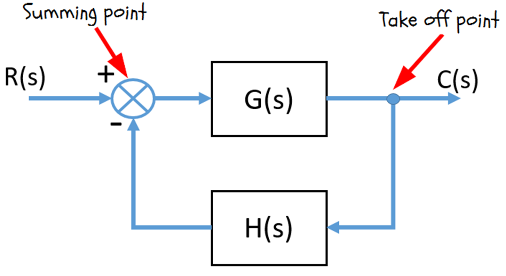
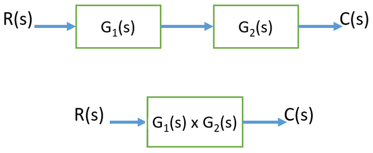
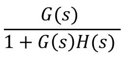
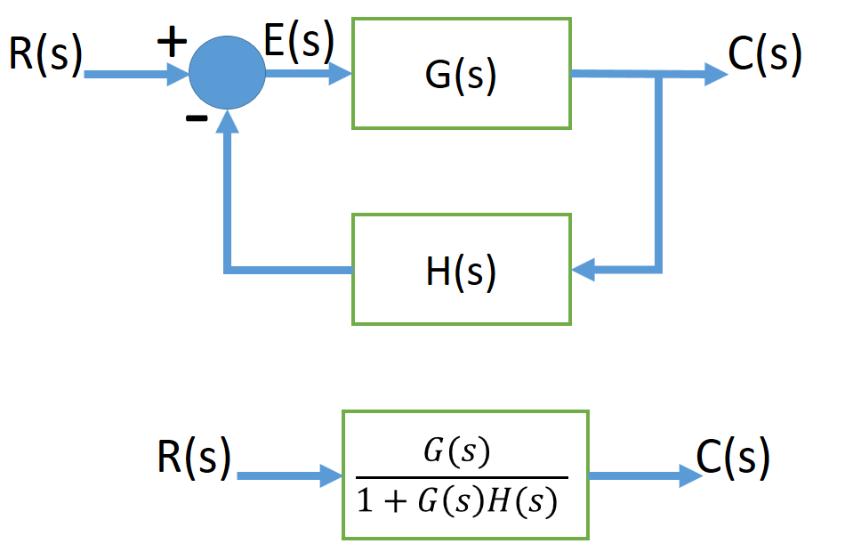
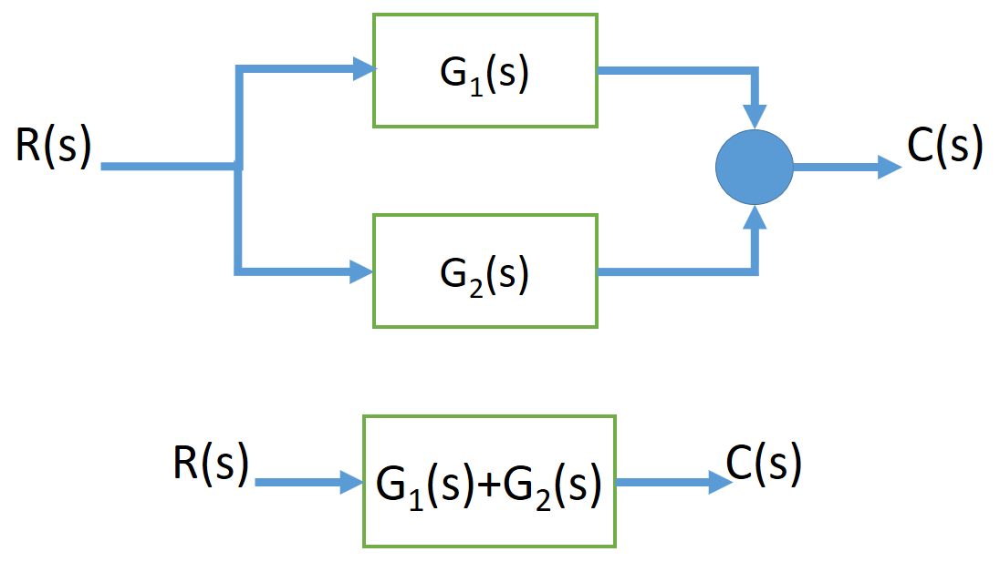
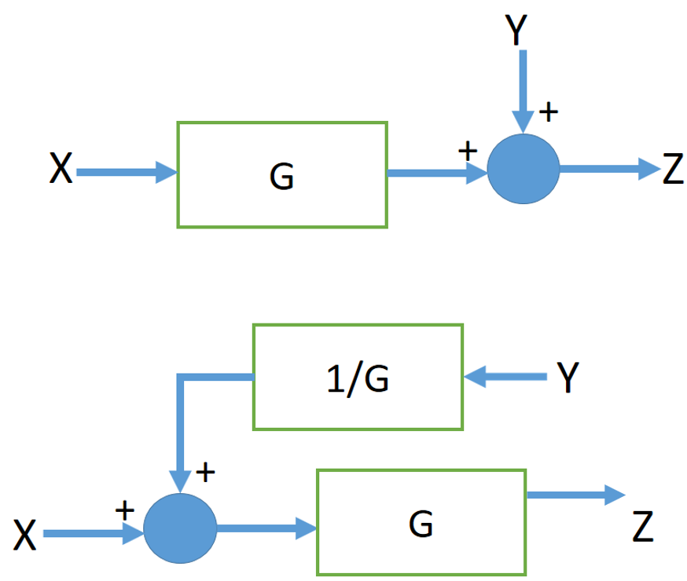
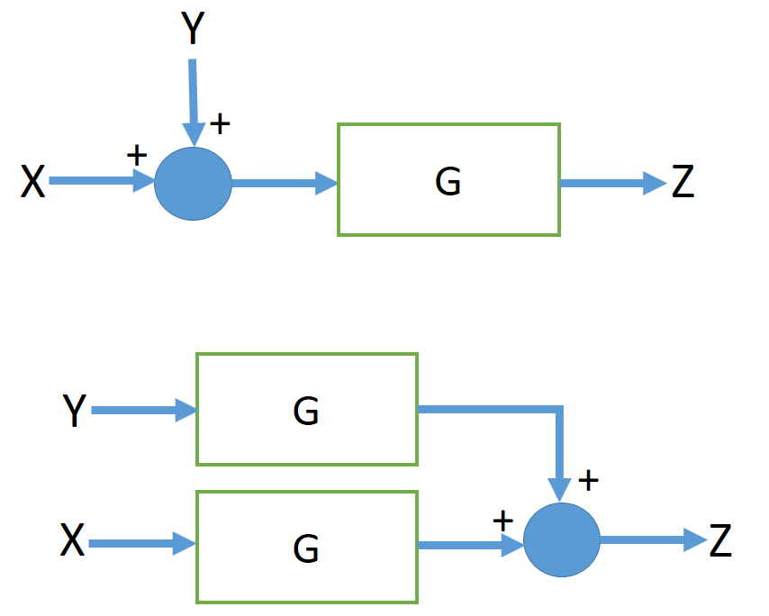
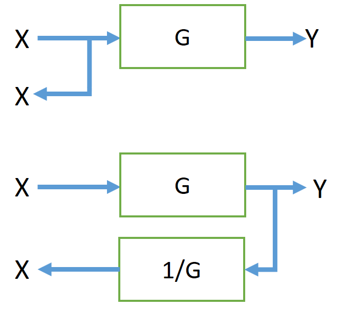
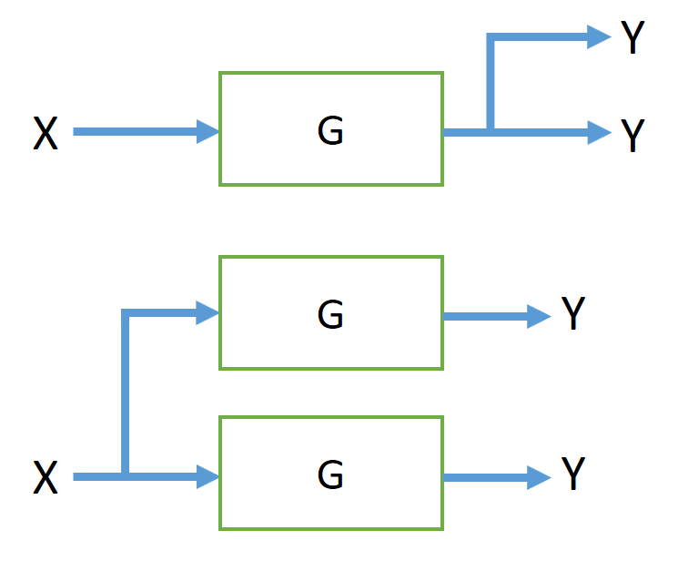
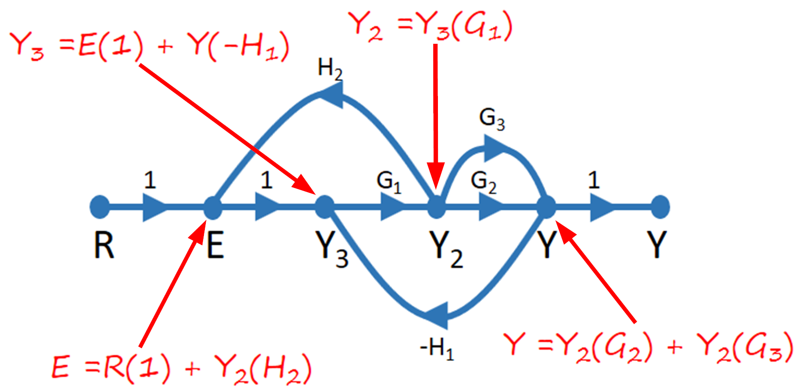

HOME BLOG EBOOKS ABOUT CONTACT SHOP
If a given system is a complicated one (like our example from the last section), it is very difficult to analyze the system as a whole. For such Control systems, we can find the transfer function of each and every element of the system. And by showing connection between the elements, the complete system can be split into different blocks and analyzed conveniently.
In block diagram representation, the interconnection of system components to form a system can be conveniently shown by the blocks arranged in proper sequence. It explains the cause and effect relationship existing between the input and output of the system, through the blocks. Each block in a block diagram is called a Functional block, it means the block explains the mathematical operation on the input by the element to produce the corresponding output. The transfer function of the element is mentioned inside the block.
There are four basic components of a block diagram. First are the blocks themselves describing the relation between input and output through transfer function. Then there are summing points, where the output of two or more blocks are added algebraically. The third component of a block diagram is called a take-off point, which represent the application of total output from a point as the input to some other block. Finally block diagrams contain arrows indicating the direction of flow of signals.

Utilizing some basic rules, it is possible to reduce a complex block diagram to a simple form.
Combining Cascade blocks:
Blocks connected in cascade can be replaced by a single block with transfer function equal to the product of the respective transfer functions.

Eliminating a Feedback loop:
The transfer function of a simple feedback loop with, where G(s) is the forward path transfer function and H(s) is the feedback path transfer function, is given by


Parallel Blocks:
Blocks are said to be in parallel if they have a common input and the overall output is the sum of the individual outputs. The overall transfer function is simply the sum of the transfer functions of the individual blocks

Moving a summing point ahead of a block:
It is sometimes necessary to move a summing point ahead of a block to simplify the block diagram. This can be done provided the transfer function of the blocks are modified accordingly.

Moving a summing point behind a block:

Moving a pick-off point behind a block:

Moving a pick-off point ahead of a block:

Signal flow graphs are an alternate way of representing systems, particularly when the set of equations describing the system are available. Unlike block diagrams which consist of blocks, arrows, summing junctions and pickoff points, a signal-flow graph consists only of branches, which represent systems and nodes, which represent signals. In the signal flow graph, all the variables, dependent and independent are represented by small circles called Nodes. The relationships between various nodes are represented by joining the nodes as per the equations. The lines joining the nodes are called branches. Each branch is associated with a transfer function and an arrow. The transfer function represents the relationship between adjoining variables and the arrow indicates the direction of flow of signals.
